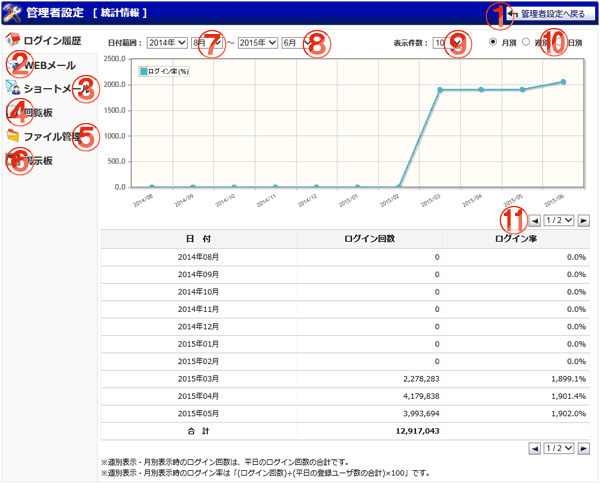
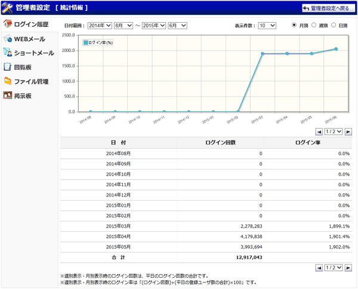
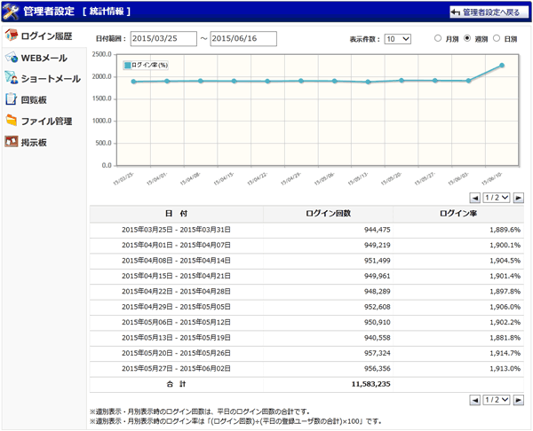
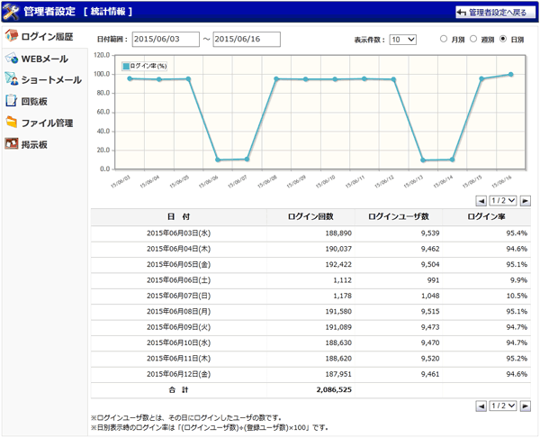

ログイン履歴の統計情報を一覧表示する画面です。

月別統計情報

週別統計情報

日別統計情報

機能説明
管理者設定へ戻るボタンメイン画面レイアウト設定確認 画面へ遷移します。 |
WEBメール統計情報画面遷移ボタンWEBメールの統計情報画面へ遷移します。 |
|---|---|
ショートメール統計情報画面遷移ボタンショートメールの統計情報画面へ遷移します。 |
回覧板統計情報画面遷移ボタン回覧板の統計情報画面へ遷移します。 |
ファイル管理統計情報画面遷移ボタンファイル管理の統計情報画面へ遷移します。 |
掲示板統計情報画面遷移ボタン掲示板の統計情報画面へ遷移します。 |
指定開始日付表示する日付の開始日を選択します。 |
指定終了日付表示する日付の終了日を選択します。 |
表示件数コンボ表示件数を選択します。 |
月別 / 週別 / 日別ラジオボタン表示する統計情報の単位を選択します。 |
ページコンボ・前頁・次頁ページコンボで任意のページへ、前頁アイコンクリックで前のページへ、次頁アイコンクリックで次のページへそれぞれ遷移します。 |
表示・入力項目説明
日付
日付範囲で指定された日付が表示されます。
ログイン回数
日別表示時：総ログイン回数を表示します。
週別表示・月別表示時：平日のログイン回数の合計を表示します。
ログインユーザ数
その日にログインしたユーザの数を表示します。
ログイン率
ログイン率を小数点以下第二位を四捨五入して表示します。
日別表示時：「(ログインユーザ数)÷(登録ユーザ数)×100」を表示します。
週別表示・月別表示時：「(ログイン回数)÷(平日の登録ユーザ数の合計)×100」を表示します。
合計
ログイン回数、ログインユーザ数(日別表示時)の合計を表示します。